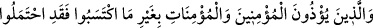
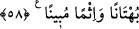

koşulmasa bile artık o emânı olmayan bir kâfirdir. Ancak kâfir kötü inancı ve onu
uygulaması sebebiyle tekzib edip yalanlamak ve benzeri yollarla O’nu zikrederse, böyle
yapmakla onun ahdi/sözleşmesi bozulmaz. Ancak bunları da söyleyip yapmamak şart
koşulmuşsa o zaman sözleşmesi bozulur. İmam Mâlik ve Ahmed b. Hanbel bu durumda
olan biri müslüman olmazsa öldürülür demişlerdir. Ahmed b. Hanbel’in mezhebinin
imamlarından bir topluluk Hz. Peygamber (s.a.)’e söven kimsenin her hâlükârda
öldürüleceğini söylemiştir. Onlardan birisi Şeyh Takiyyüddîn İbn Teymiyye’dir. O:
“Mezhebin sahih görüşü budur” demiştir.
Allâh’ın diğer peygamberlerine ve meleklerine söven kimsenin hükmü,
Peygamberimiz (s.a.)’e sövenin hükmü gibidir. İslam dîninden irtidâd etmeksizin
müslümanlardan Allâh’a söven -ki bundan Allâh’a sığınırız- kimsenin hükmü ile Üzeyir
(a.s.) ve İsa (a.s.) ve benzeri konularda kendi dîni inanç ve prensipleri dışında Allâh’a
söven kafirin hükmü yine Peygamberimiz (a.s.)’a söven kimsenin hükmü gibidir.
Allah Teâlâ’dan bizi korumasını ve bize hidâyet vermesini istiyor, yanılmaktan ve
azgınlıktan O’na sığınıyoruz. Elbette koruyan, görüp gözeten yalnız O’dur.
58. Mü’min erkeklere ve mü’min kadınlara, yapmadıkları bir şeyden dolayı
eziyet edenler, şüphesiz bir iftira ve apaçık bir günah yüklenmişlerdir.
“Mü’min erkeklere ve mü’min kadınlara yapmadıkları bir şeyden dolayı” yâni
karşılığında eziyeti hak edecekleri bir suçları olmadan sözlü veya fiili olarak “eziyet
edenler,” onların eziyet göreceği davranışları yapanlar…
Önceki âyette “eziyet/incitme” mutlak olarak ifâde edildikten sonra bu âyette
“yapmadıkları bir şeyden dolayı” ifâdesiyle mü’minlere eziyetin takyîd edilmesi, Allah
ve Rasûlü’nü incitmenin ancak haksız yere olduğunu bildirmek içindir. Mü’min
erkeklere ve mü’min kadınlara yapılan eziyet ve incitme ise bazen haklı olur, bazen
haksız olur.
Âyet her mü’min erkek ve kadına yapılan haksız eziyet ve incitme konusunda geneldir.
Dolayısıyla aşağıda zikredilen şu hususlara da şâmildir:
Hz. Ömer (r.a.) bir gün dışarı çıktı. Dışarıda süslenmiş ve günaha meyilli bir câriye
gördü ve câriyeyi cezâlandırdı. Bunun üzerine câriyenin âilesi çıkıp Hz. Ömer’i sözlü
olarak incitip eziyet ettiler.
Yine rivâyete göre münâfıklar Hz. Ali’ye eziyet edip onu incitiyor ve ona içinde hiç
hayır olmayan sözler işittiriyorlardı.
İfk kıssasına dâir rivâyet de bu kabildendir ki Hz. Âişe (r.a.)’yı Safvân es-Sehmî (r.a.)